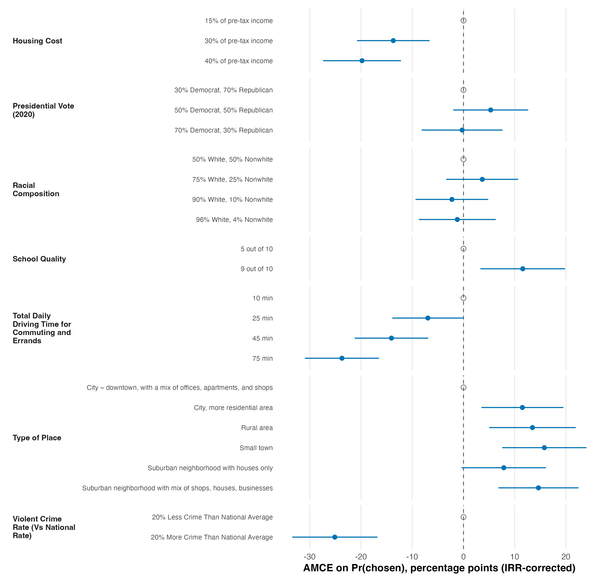
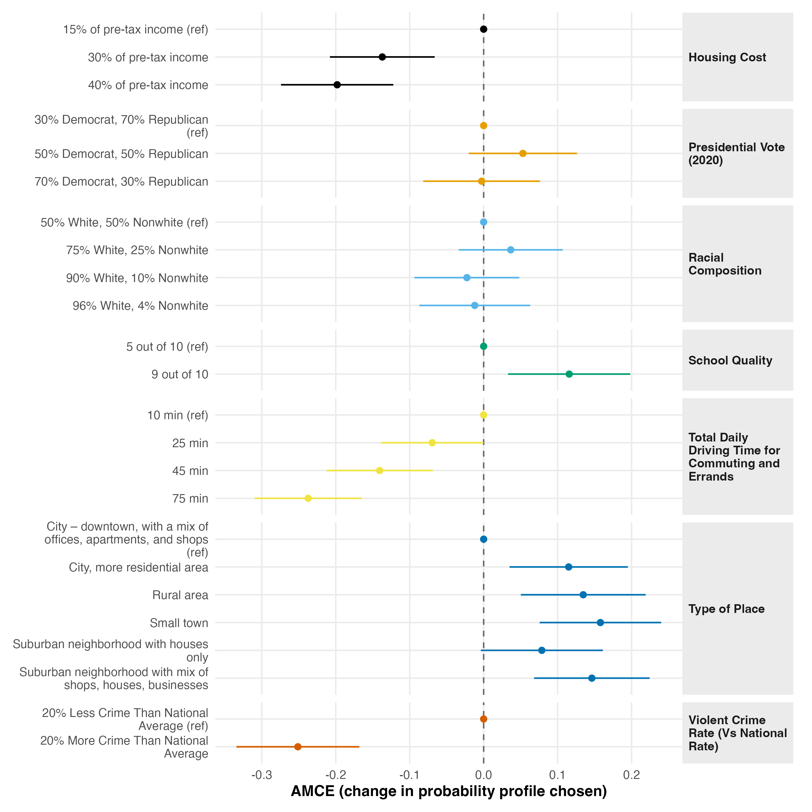
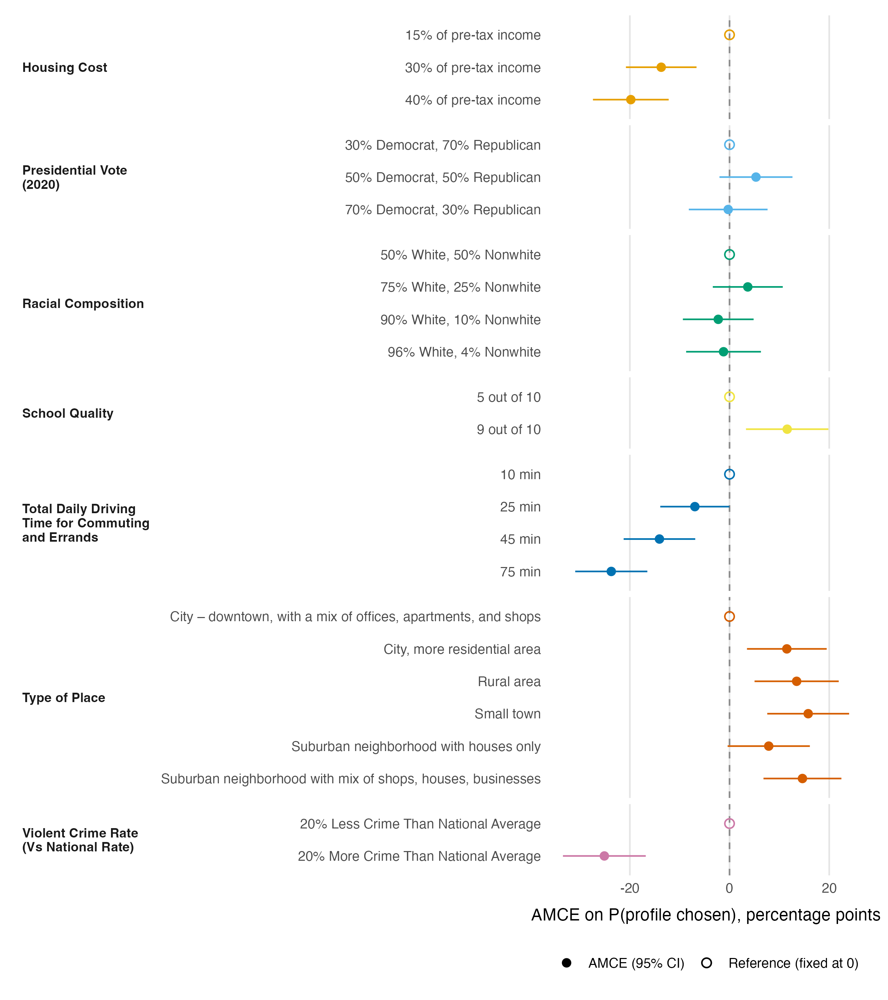
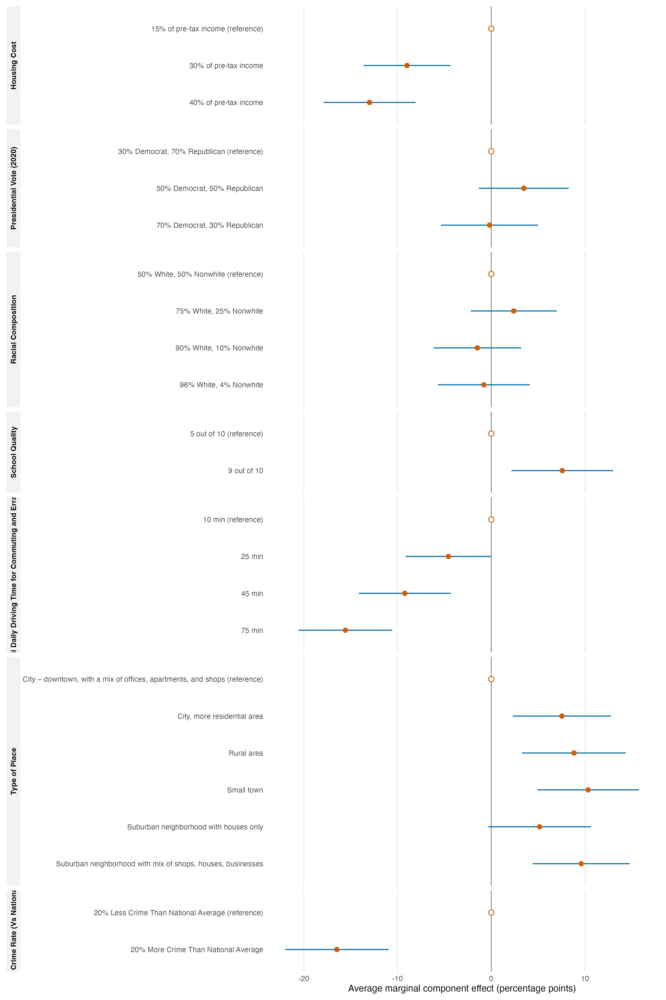

Motivation
Pick an orchestration mode and you are really picking who leads and who gets the delegated work, each at a set reasoning effort. This demo runs one real conjoint analysis four ways (Fable-led, Opus-led, Codex-led, and a plain session with a single advisor consult) and commits every run, so you can read what actually changed instead of taking a claim on faith.
The honest framing first. On easy, computable work the modes converge. Given the same mechanical brief, a light Fable lead, a heavy Opus lead, and a medium Codex lead all produce the same numbers and reach the same verdict. That convergence is itself a finding. It means the routing shape is a cost-and-latency choice when the task is single-step. Difficulty is the differentiator. Only at the judgment tier do the modes produce visibly different products, and that is what this lab is built to show.
Set up
Install Claude Code and the Open Science Skills first (see Getting started):
npm install -g @anthropic-ai/claude-code
claude plugin marketplace add scdenney/open-science-skills
claude plugin install oss@open-science-skillsFor the Codex-led mode, install the Codex CLI (follow OpenAI's own instructions) and symlink the skills into Codex's user-wide skills folder:
git clone https://github.com/scdenney/open-science-skills
cd open-science-skills
mkdir -p "$HOME/.agents/skills"
for skill in "$PWD"/codex/*/; do
ln -sfn "${skill%/}" "$HOME/.agents/skills/$(basename "$skill")"
doneEvery run analyzes package-shipped data in R, so install R (4.5+) and the projoint package, the only dependency beyond base R and ggplot2:
Rscript -e 'install.packages("projoint")'Then clone the demo:
git clone https://github.com/scdenney/ai-for-research.git
cd ai-for-research/demos/orchestration-labThis demo calls hosted models. It is not offline and it is not free. The mechanical and standard tiers are cheap, but the hard-tier runs committed here cost $4–7 each (API-equivalent). The run logs record what each one cost. Re-run selectively.
The design one dataset, three tiers
Every run analyzes exampleData1 from the projoint R package, a real community-choice conjoint (400 respondents, 8 choice tasks, 2 profiles per task, 7 attributes, plus one repeated task for a reliability check), shipped as a wide-format Qualtrics export. Because it ships with the package there is nothing to download and no license question, so no data is committed to the repo. See data/README.md.
Three tiers share one brief each, identical across modes. T1 (mechanical): describe the design and check randomization balance. T2 (standard): estimate AMCEs for all seven attributes with respondent-clustered uncertainty, plus a dot-and-whisker figure. T3 (judgment): answer a reviewer who argues the headline crime finding is an artifact of arbitrary AMCE baselines, using marginal means as the baseline-invariant check.
The matrix is 11 runs. Three modes (fable, opus, 46) each run all three tiers. The advisor arm runs only at T3, in two flavors (Claude/Fable and Codex/Sol). That is 3×3 + 2 = 11 captured runs.
Each run records a run-log.md (tokens, wall-clock, turn count, every delegation, and any friction), a transcript excerpt, the script.R and figures the run produced, and a SHA256SUMS of the artifacts. Every run is scored against reference/ANSWER-KEY.md, whose numbers were computed first from gold-standard scripts. The scores are in RESULTS.md, the single source every number on this page is copied from.
The four modes
Each mode is one of the Open Science Skills. What they share is a lead model that plans and integrates. What they differ on is who does the work and at what effort.
Fable-led

Fable 5 leads at maximum effort as a light, fast orchestrator. It plans and synthesizes but delegates the actual work. Reasoning-heavy analysis goes to an Opus deep-reasoner, mechanical work to a Sonnet fast-worker, and high-stakes or fresh-perspective questions to a GPT-5.6 Codex peer (gpt-5.6-terra). Runs in Claude Code.
Opus-led

Opus 4.8 leads under ultracode as a heavy orchestrator that reasons on the hard parts itself. It draws on the same bench (Opus deep-reasoner, Sonnet fast-worker, GPT-5.6 Codex peer) but delegates only to fan out or stay context-lean, which is why it does the most work inline and runs the longest. Runs in Claude Code.
Codex-led

GPT-5.6 Terra leads at medium effort on Codex. This is 46-orchestrate, the Codex-side name for the Fable mode. It spawns same-model researcher, implementer, and verifier subagents rather than a mixed bench, with an optional higher-effort consult held in reserve for the hardest calls. On this demo's compact tasks it judged briefing more expensive than doing, and worked inline throughout.
Advisor consult

No orchestration. A plain working session solves the task itself, then sends one self-contained briefing to a stronger, effort-matched reviewer for a single decisive read. The reviewer is Fable 5 on Claude Code, or GPT-5.6 on Codex, and is read-only. It never edits your files. Runs on either platform. Here it appears only at T3, the tier where a second opinion is worth paying for.
T1 — describe the design mechanical
The brief (t1-descriptive.md) asks for a design summary and a balance check (respondents, tasks, the seven attributes and their level counts, and one faceted frequency figure), within at most one revision cycle and at most three delegations.
| Mode | Verdict | Tokens / cost | Time | Routing |
|---|---|---|---|---|
| fable | Pass facts correct; flags Driving Time (3.08pp spread) | 361k in / 5.1k out · $1.88 | 205 s · 3.4 min | 1 → Sonnet (low) |
| opus | Pass facts correct; exact 1.94pp max dev, called negligible | 1.60M in / 25.8k out · $2.26 | 594 s · 9.9 min | 1 → Sonnet (low) |
| 46 | Pass facts correct; exact 1.94pp max dev, called negligible | 66,987 tok | 194 s · 3.2 min | 0 — inline |
All three get the design facts right. None claims "perfect balance." None reproduces the reference χ² = 14.6 test. Full per-run detail (friction, figure conventions, the exact balance language) is in RESULTS.md.
T2 — estimate and report standard
The brief (t2-amce.md) asks for AMCEs on all seven attributes with respondent-clustered uncertainty, plus a dot-and-whisker with reference levels at zero and a roughly 200-word results paragraph.
| Mode | Verdict | Tokens / cost | Time | Routing |
|---|---|---|---|---|
| fable | Pass IRR-corrected AMCEs; crime −25.1 | 617k in / 8.0k out · $2.27 | 303 s · 5.0 min | 1 → Sonnet (low) |
| opus | Pass IRR-corrected AMCEs; crime −25.1; τ=0.17 | 1.14M in / 35.8k out · $2.14 | 775 s · 12.9 min | 0 — inline |
| 46 | Pass uncorrected AMCEs (labeled); crime −16.5 | 68,811 tok | 266 s · 4.4 min | 0 — inline |
The estimand split shows up in the figures, where fable and opus lead with the IRR-corrected AMCEs and 46 with the uncorrected (labeled) ones, a constant 1.525× smaller. Below, the reference solution comes first, then the figure each mode produced.




Full detail (figure conventions, the results paragraphs, per-run friction) is in RESULTS.md.
T3 — answer the reviewer judgment
The brief (t3-reviewer-memo.md) hands each mode a reviewer's objection (that the headline crime finding is an artifact of arbitrary AMCE baselines) and asks for a roughly 400-word reply grounded in marginal means, the baseline-invariant quantity. The trap is over-conceding. The headline attribute is binary, so its magnitude is baseline-invariant.
| Mode | Verdict | Tokens / cost | Time | Routing |
|---|---|---|---|---|
| fable | Pass misses D (crime–commute gap within noise) | 875k in / 12.7k out · $4.13 | 790 s · 13.2 min | 2 → Opus (max) + Codex peer, parallel |
| opus | Pass+ full MM ranking; calls the top a CI tie | 6.28M in / 84.8k out · $6.73 | 1469 s · 24.5 min | 1 → Codex consult (unpinned) |
| 46 | Partial MMs wrong (.541/.458 vs .626/.374) | 104,929 tok | 259 s · 4.3 min | 0 — inline |
| advisor · Claude | Distinction reports both 16.5 / 25.1; adds the decisive argument | $7.08 (solve $5.52 + revise $1.57) | 955 s · 15.9 min | 1 consult (Fable 5 · max) |
| advisor · Codex | Pass corrected only; A thin, consult fixed over/under-claims | 115,348 + 111,520 tok | ~8 min | 1 consult (gpt-5.6-terra · med) |
This is the tier where routing matters. fable's run fanned out along a parallel path (an Opus deep-reasoner for the estimation and a blind Codex peer for an independent read), recorded verbatim in its run log, runs/fable/t3/run-log.md:
1. Task → **deep-reasoner** (Opus, inherits session effort): "D1: projoint
sensitivity analysis" — the estimation line: alternative baselines via
set_qoi, marginal means, the sensitivity figure and table; internal
consistency check AMCE ≡ MM-difference holds to 7e-15; corrected (IRR)
estimates used throughout.
2. `codex-peer.sh --mode consult` → **Codex peer** (gpt-5.6-terra @ xhigh):
"D2", run blind to the deep-reasoner's interpretation — given only the
numbers, it independently reached the same verdict and contributed two
residual caveats. This is the skill's high-stakes parallel path (high blast
radius: a published claim; hard to verify: judgment about claim strength).Full detail, including every rubric item (A–E) and each advisor consult's catch, is in RESULTS.md.
What the runs show
At the mechanical tier all three modes land in the same place. Each independently arrived at the same design facts (400 respondents, 8 tasks, 2 profiles, 7 attributes, identical level counts) and none claimed "perfect balance." A light Fable lead delegating to Sonnet, a heavy Opus lead delegating to Sonnet, and a medium Codex lead working inline all reach the same numbers. The only gradient is how each phrases the honest imbalance flag. opus and 46 report the exact 1.94pp maximum deviation and call it negligible, while fable reports a 3.08pp spread and calls Driving Time "not indicative of a randomization problem." None reproduced the reference χ² = 14.6 test. When the task is computable and single-step, the routing shape is a cost-and-latency choice, not a correctness one. That convergence is itself the finding.
The modes differ most in how they route work. 46-orchestrate spawned zero subagents across all three tiers, working inline even on the judgment tier. Its rule is that for compact work, briefing a subagent costs more than doing it. fable-orchestrate delegated both mechanical tiers wholesale to a low-effort Sonnet (one contract each) and saved its fan-out for T3, splitting the estimation to an Opus deep-reasoner and running a blind gpt-5.6-terra Codex peer in parallel. opus-orchestrate kept the reasoning with the lead (zero delegations at T2, zero Task spawns at T3, only the T1 script sent to Sonnet), which is why it runs the longest (24.5 min, 67 turns at T3). The advisor arms are a different shape entirely. A plain solve, one out-of-band consult, one revise, where the consult is the whole intervention.
The modes also produce different answers. At T2, fable and opus lead with IRR-corrected AMCEs (crime −25.1pp, projoint's default) while 46 leads with uncorrected AMCEs (crime −16.5pp, labeled). A reader takes away 25pp from two modes and 16pp from the third. 46's T3 marginal means are simply wrong (.541/.458, an 8.3pp gap, against the reference .626/.374), and it never disclosed its IRR choice. opus's T3 Codex consult was uncalibrated. The lead called codex exec without a --model pin, so the second opinion ran at the machine's gpt-5.5 default rather than the prescribed gpt-5.6-terra@xhigh. The deviation cost process fidelity, not accuracy. The two advisor consults each caught a different failure. The Claude/Fable consult verified every number against the on-disk script, table, and figure, added the single decisive argument (no baseline can lift a rival's displayed AMCE above crime's point estimate, so the softening is sampling error, not baselines), surfaced the IRR magnitude, and fixed a ± notation hazard, which lifted the memo to Distinction. The Codex/Sol consult caught the opposite pair. It flagged an overclaim (crime called the "largest span" untested) and an over-concession (the max−min MM range is baseline-invariant, so concede less), softening the headline to "among the largest, comparable to commuting time."
Cost tracks the lead, and the gap widens with difficulty. Within Claude Code the light-lead mode is cheaper than the heavy-lead mode. fable runs $1.88 / $2.27 / $4.13 across the three tiers against opus's $2.26 / $2.14 / $6.73, whose own-reasoning routing spends 6.3M input tokens and 24.5 minutes at T3. The single most expensive cell is the T3 advisor-Claude arm at $7.08 (solve $5.52 + revise $1.57), the two-step protocol that bought the Distinction memo. Codex sits off the USD scale (its CLI reports only tokens), but its footprint is a different order of magnitude. It runs 67k–105k tokens per tier against fable's 361k–875k and opus's 1.14M–6.28M "input" (Claude Code's figure counts cache reads). At the hard tier the within-platform ranking is fable ($4.13) < opus ($6.73) < advisor-Claude ($7.08). 46 and advisor-Codex sit outside the dollar comparison.
Check by hand
Re-run T2 yourself and check your estimates against reference/. Under projoint's defaults the corrected column is exact and seed-independent, so your numbers should reproduce to the digit. That is a clean way to see whether a mode's estimand and labeling are honest.
Then read every memo against the sensitivity table (reference/t3/sensitivity-table.md). The judgment tier is where the modes diverge, and the table is what settles who is right. It shows whether the marginal means are correct, whether the crime–commute gap is treated as a statistical tie, and whether the memo concedes exactly what is mechanically true and no more.
Re-run the matrix
Each run starts from its own leaf directory under runs/<mode>/<tier>/, in a fresh session, so it writes its artifacts in place. Short forms below. The full protocol (excerpt rules, hashing, the advisor arm's three steps) is in prompts/run.md.
Fable-led (headless Claude Code):
cd runs/fable/t1
env -u ANTHROPIC_API_KEY claude -p \
"/oss:fable-orchestrate $(cat ../../../prompts/t1-descriptive.md)" \
--output-format json > claude-envelope.jsonCodex-led (headless Codex):
cd runs/46/t1
codex exec --model gpt-5.6-terra -c model_reasoning_effort=medium \
--sandbox workspace-write --skip-git-repo-check -C "$PWD" \
"\$46-orchestrate
$(cat ../../../prompts/t1-descriptive.md)" < /dev/null 2>&1 | tee exec-stdout.logThe < /dev/null is load-bearing. codex exec hangs on stdin without it. Swap the tier's prompt file to re-run T2 or T3.
Opus-led is interactive and user-driven, a real Opus 4.8 + ultracode session rather than a headless call. Follow runs/opus/SESSION-PROTOCOL.md. The advisor arm is three scripted steps at T3 only (solve, then consult, then revise). See prompts/run.md.
ANTHROPIC_API_KEY must be unset (env -u ANTHROPIC_API_KEY). If it is set, it overrides the claude.ai login and bills — or fails on — the API account instead.